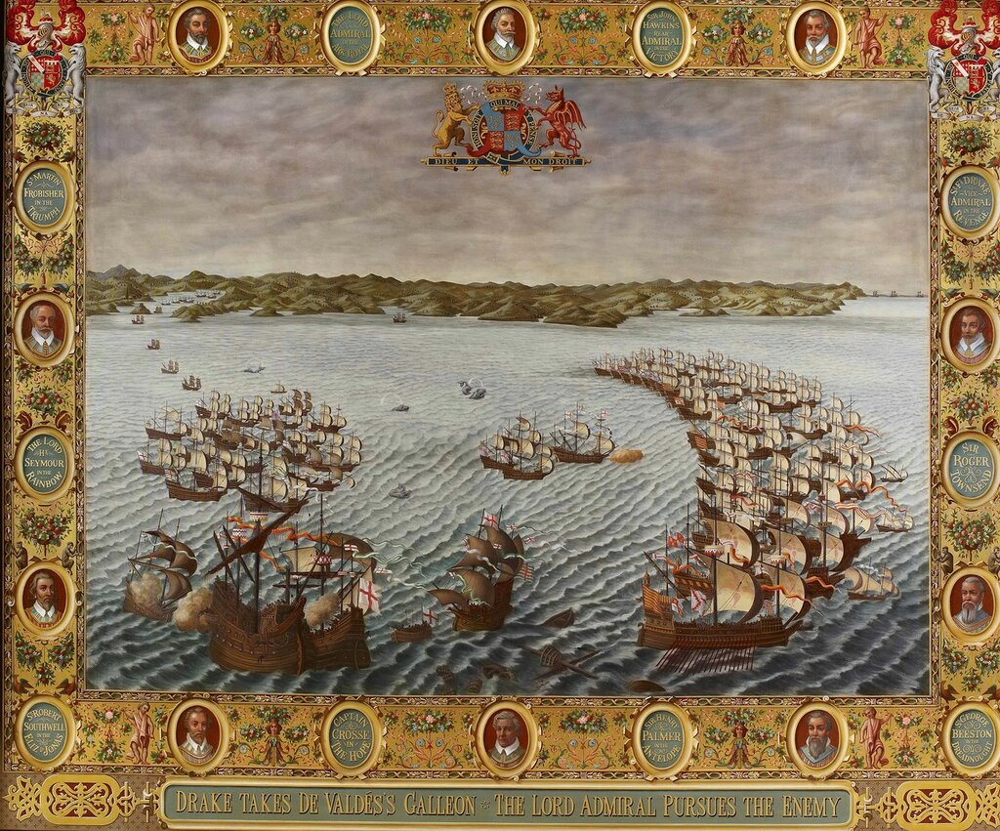
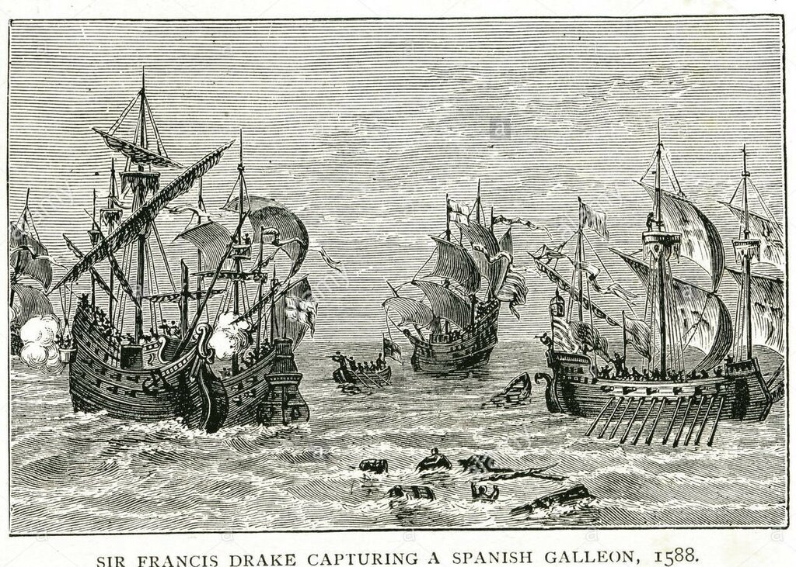
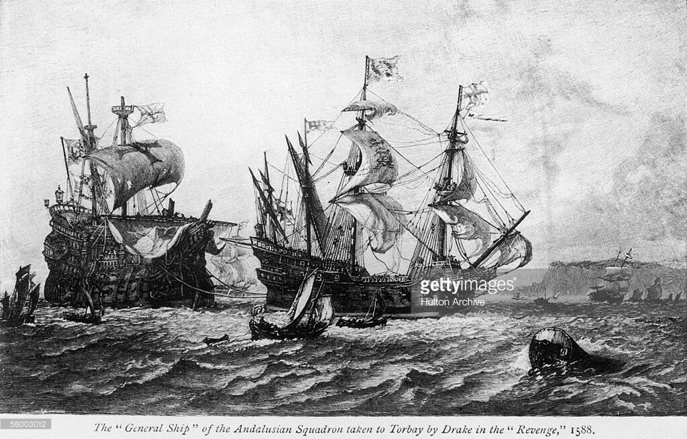

Такое мнение, весьма лестное для гостя, составилось о нем в городе, и оно держалось до тех пор, покамест одно странное свойство гостя и предприятие, или, как говорят в провинциях, пассаж, о котором читатель скоро узнает, не привело в совершенное недоумение почти всего города.
Н.В.Гоголь. Мертвые души



Воскресенье 31 августа началось у Плимута (paraje de Plemua) с перемены ветра на WNW (Oesnoroeste); мы заметили 80 кораблей в наветренном относительно нас положении (al nostro barlovento), а у берега, под ветром (á sotavento), еще 11 кораблей, включая три больших галеона, которые открыли артиллерийский огонь по некоторым нашим судам. Эта [английская] эскадра постепенно сместилась на ветер и соединилась с основным флотом.
Наша Армада перестроилась в боевой ордер, флагманский корабль поднял на своей фок-мачте королевский штандарт (la Capitana puso el estandarte real en el trinquete). Вражеский флот на ходу обстрелял наш авангард, который находился под командованием дона Алонсо де Лейва, а затем атаковал арьегард, которым командовал адмирал (el Almirante) Хуан Мартинес де Рекальде. Рекальде, чтобы сохранить свое место и отразить атаку, несмотря на то, что он заметил, что не получил поддержки от кораблей арьергарда, которые присоединились к остальной Армаде, решил ждать подхода противник и принять бой. Противник атаковал его ожесточенным артиллерийским огнем, однако не шел на сближение. В результате обстрела был разрушен такелаж флагмана, в частности был разорван фока-штаг и от пушечных ядер получены две пробоины в фок-мачте. Корабль Grangil, на котором находились дон Диего Пиментеро и Диего Энрикес из Перу (D. Diego Pimentero y D. Diego Enriquez, el del Peral), был в арьергарде позади Хуана Мартинеса де Рекальде [в составе испанского флота не было корабля с названием Grangil; с большое долей вероятности здесь имеется в виду Gran-Grin, вице-флагман бискайской эскадры – g._g.]. Флагманский корабль Армады (la Capitana real) зарифил паруса фок-мачты (amainó las velas del trinquete), потравил шкоты (alargó las escotas) и лег в дрейф (trincando), ожидая, пока Рекальде присоединится к основным силам. Но противник отвернул и герцог собрал свой флот. Это все, что он смог сделать, так как вражеский флот выиграл ветер, английские корабли были очень быстроходные и маневренные, хорошо слушались своей команды. В тот же полдень флагманский корабль дона Педро де Вальдеса столкнулся с «Каталиной», одним из судов его эскадры, сломав себе бушприт и фок (el bauprés y vela del trinquete). После этого дон Педро присоединился к основным силам Армады для ремонта повреждений. Армада продолжала маневрировать до четырех часов пополудни, пытаясь захватить ветер у противника (ganar el barlovento).
В это время на корабле вице-флагмана (al Almirante) Окендо загорелись бочки с порохом, и на воздух взлетели две палубы и надстройка в корме, где находился генеральный казначей Армады и часть казны Его Величества. Когда герцог увидел, что судно стало оседать на корму, он развернул свой корабль на помощь к нему (viró con su Capitana la vuelta de esta nave) и произвел один пушечный выстрел, чтобы весь флот следовал за ним. Затем он распорядился направить на помощь паташи. Огонь погасили и флот противника, который устремился к кораблю Окендо, отвернул, заметив, что рядом с ним находится флагманский корабль герцога. Таким образом корабль удалось отстоять и воссоединить с флотом. Во время указанных маневров фок-мачта корабля дона Педро де Вальдеса наклонилась и легла на рею грот-мачты (rindió el trinquete sobre la entena del árbol mayor). Герцог вновь устремился на помощь и пытался завести конец (darle cabo), однако, несмотря на большие усилия, ветер и море не позволили это сделать. Корабль дона Педро начал отставать, и с наступлением ночи Диего Флорес сказал герцогу, что если он уменьшит ход, чтобы оставаться с ним, то остальные корабли нашего флота потеряют их из виду, поскольку они ушли далеко вперед. А это может означать, что к утру мы можем остаться менее чем с половиной флота. А так как флот противника находится очень близко, герцог, по мнению Диего Флореса, не должен рисковать всем своим флотом; остановившись, он проиграет всю экспедицию (perdería la jornada). Получив такой совет, герцог приказал капитану Охеда вместе с его флагманским кораблем и четырьмя паташами, а также флагманским кораблем Диего Флореса [галеон San Cristobal – g._g.] , вице-флагманом эскдры дона Педро [галеон San Francisco – g._g.] и одним галеасом остаться с флагманом дона Педро и взять его на буксир или, если это не получится, снять людей с него. Однако неблагоприятная погода, морское волнение и ночная темнота не позволили сделать этого. И герцог продолжил плавание и соединился со своим флотом.. Его стремлением было сохранить целостность Армады с учетом возможного развития событий на следующий день.